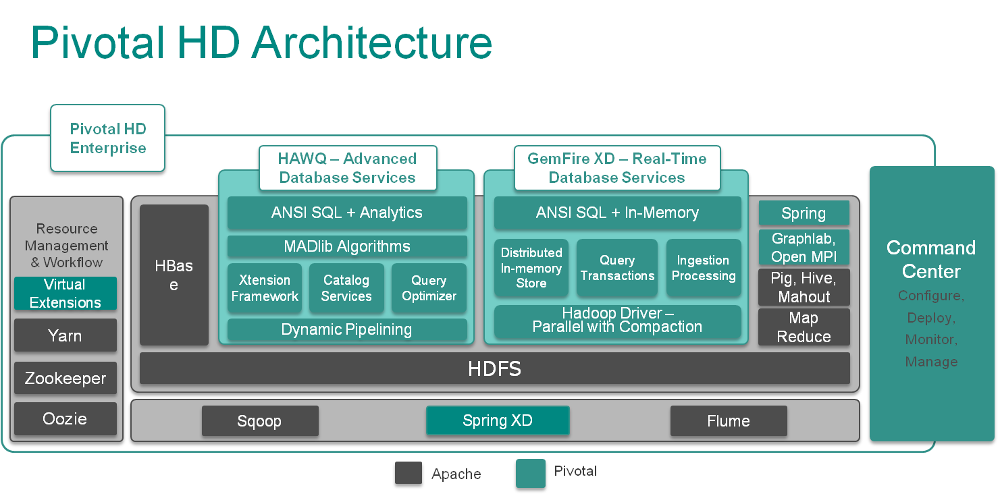

| Pivotal HD / PHD Installation and Administration | |
Pivotal HD Enterprise is an enterprise-capable, commercially supported distribution of Apache Hadoop packages targeted to traditional Hadoop deployments.
Pivotal HD Enterprise is a commercially-supported distribution of the Apache Hadoop stack. The figure below displays how each Apache and Pivotal component fits into the overall architecture of Pivotal HD Enterprise:

Pivotal HD Enterprise includes the following Apache and Pivotal components:
Pivotal HD Enterprise enriches the Apache stack distribution by providing the following:
PCC stores the metadata for Hadoop cluster nodes and services, the cluster configuration and the system metrics in a PostgreSQL database.
The following services can be deployed and configured via the Pivotal Command Center CLI, or manually.
The following services can only be deployed and configured manually (see the Stack and Tools Reference for details)
HDFS is a fault tolerant distributed file system which is designed to run on commodity hardware.
The following table shows HDFS service roles:
| Role Name | Description |
|---|---|
| NameNode | The NameNode serves as both directory namespace manager and "inode table" for the Hadoop File System (HDFS). Each HDFS deployment must have a running NameNode. |
| Secondary NameNode | The Secondary NameNode periodically downloads the current NameNode image and edits log files. It joins them into a new image and uploads the new image back to the primary NameNode. |
| DataNodes | A DataNode stores data in the HDFS. A functional filesystem has more than one DataNode, with data replicated across all nodes. |
| Hadoop Client | A client machine has Hadoop installed with all the cluster settings, but is not a Master or Slave. Instead, the role of the client is to load data into the cluster, submit Map Reduce jobs that describe how to process the data, and then retrieve or view the results of the finished job. |
| Journalnodes * | A group of daemons to maintain the namenode edits information. These are used by both active and standby namenodes in a HA enabled cluster to keep their state synchronized. |
| Standby Namenode * | Namenode running on a different host in standby mode in a HA enabled cluster. This will take over as the active namenode if the current active namenode fails. |
*Only applicable for HA enabled clusters.
YARN is a framework that facilitates writing distributed processing frameworks and applications and supports MapReduce version 2.
The following table shows YARN service roles:
| Role Name | Description |
|---|---|
| Resource Manager | The ResourceManager is the master that manages all the cluster resources running on the YARN system. |
| Node Manager | The NodeManager manages resources on a particular node. |
| History Server | The History Server stores a history of the mapreduce jobs run on the cluster. |
Zookeeper is a centralized service that enable distributed synchronization and manages configuration across a cluster.
The following table shows ZooKeeper service roles:
| Role Name | Description |
|---|---|
| Zookeeper Server | ZooKeeper Quorum Servers |
HBase is a distributed, column-oriented database that uses HDFS for storing data.
The following table shows HBase service roles:
| Role Name | Description |
|---|---|
| HBase Master | The Master server is responsible for monitoring all RegionServer instances in the cluster, and is the interface for all metadata changes. |
| HBase RegionServer | It is responsible for serving and managing regions which typically coexist with datanodes. |
| HBase Client | It is responsible for accessing HBase service. |
Hive is a data warehouse infrastructure that provides an interface similar to SQL on top of Hadoop.
| Role Name | Description |
|---|---|
| Hive Metastore | The metastore stores the metadata for all Hive tables and partitions. Postgres database is used as the datastore |
| Hive Server | Also known as thrift server, is used by clients written in Java, C++ etc to access Hive |
| Hive Client | This is a launcher or gateway node which is used to launch hive jobs |
HAWQ is a parallel SQL query engine that marries the Pivotal Analytic Database and Hadoop 2.0 and is optimized for analytics, with full transaction support. The following table shows HAWQ service roles:
| Role Name | Description |
|---|---|
| HAWQ Master | Stores the top-level metadata, as well as building the query plan |
| HAWQ StandbyMaster | This is a standby for the HAWQ Master |
| HAWQ Segments | Manages a shard of each table which typically coexist with datanodes |
PXF is an extended framework that combines the Pivotal Analytic Database engine (HAWQ) with enterprise class Apache Hadoop, HBase and Hive. The PXF service runs as a java agent on existing Hadoop, HBase and Hive nodes and enables HAWQ to consume data created by the external services.
If you do not install PXF via the CLI, and choose to install it later, refer to the HAWQ 1.2 Administrator Guide for details.
GemFire XD is a memory-optimized, distributed data store that is designed for applications that have demanding scalability and availability requirements.
Note that you cannot start GemFire XD (gfxd) using the icm_client start command. See http://gemfirexd.docs.pivotal.io/latest/userguide/index.html#getting_started/topics/install_platform.html in the GemFire XD documentation for information about how to configure and start GemFire XD members.
The following table shows GemFire service roles:
| Role Name | Description | Port |
|---|---|---|
| gfxd-locator | The GemFire XD locator process provides discovery services for all members in a GemFire XD distributed system. A locator also provides load balancing and failover for thin client connections. As a best practice, deploy a locator in its own process (LOCATOR=local_only) to support network partitioning detection. | 1527 |
| gfxd-server | A GemFire XD server hosts database schemas and provides network connectivity to other GemFire XD members and clients. You can deploy additional servers as necessary to increase the capacity for in-memory tables and/or provide redundancy for your data. | 1527 |
Pig is a data flow language used in the analysis of large data sets using mapreduce.
| Role Name | Description |
|---|---|
| Pig Client | This is a launcher or gateway node which is used to launch Pig jobs |
Mahout provides a collection of distributed machine learning algorithms on Hadoop.
| Role Name | Description |
|---|---|
| Mahout Client | This is a launcher or gateway node which is used to launch Mahout jobs |
Flume is a distributed, reliable, and available service for efficiently collecting, aggregating, and moving large amounts of log data. It has a simple and flexible architecture based on streaming data flows. It is robust and fault tolerant with tunable reliability mechanisms and many failover and recovery mechanisms. It uses a simple extensible data model that allows for online analytic application.
| Role Name | Description |
|---|---|
| Flume Agent | Provide Flume service for generating, processing, and delivering data |
| Flume Client | This is a launcher or gateway node which is used to launch Flume jobs |
Sqoop is a tool designed for efficiently transferring bulk data between Apache Hadoopand structured datastores such as relational databases.
| Role Name | Description |
|---|---|
| Sqoop Metastore | Provide shared metadata repository for Sqoop |
| Sqoop Client | This is a launcher or gateway node which is used to launch sqoop jobs |
Oozie is a workflow scheduler system to manage Apache Hadoop jobs.
| Role Name | Description |
|---|---|
| Oozie Metastore | provide Oozie service |
| Oozie Client | This is a launcher or gateway node which is used to launch Oozie jobs |
Hamster is a framework that enables users to run MPI programs on Apache Hadoop YARN platform.
GraphLab is a powerful new system for designing and implementing parallel algorithms in machine learning. It is a graph-based, high performance, distributed computation framework written in C++ that makes use of MPI and has its own programming model.